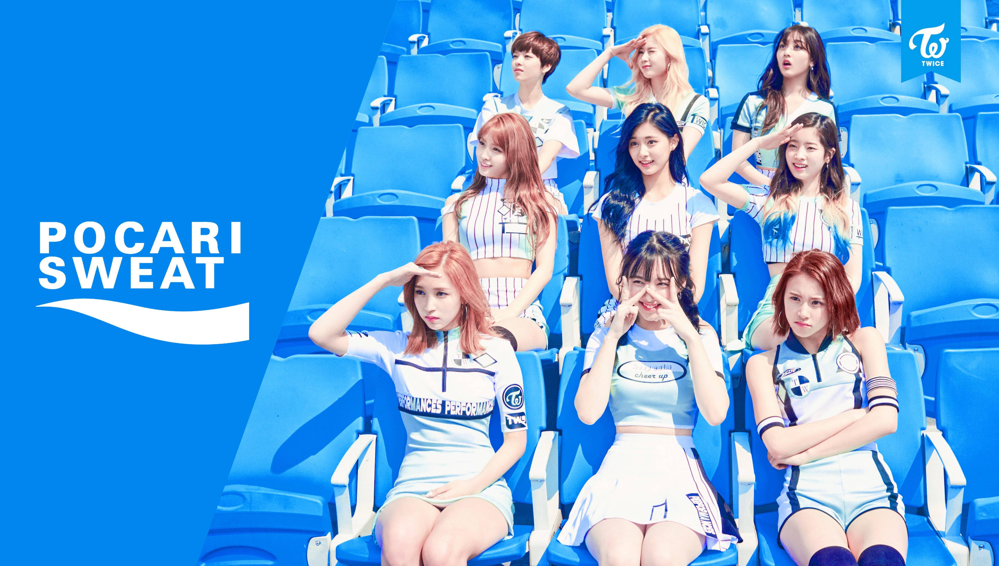
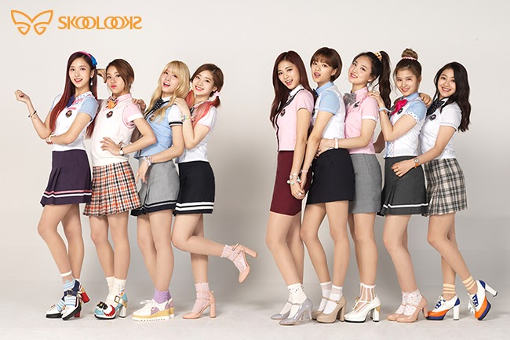
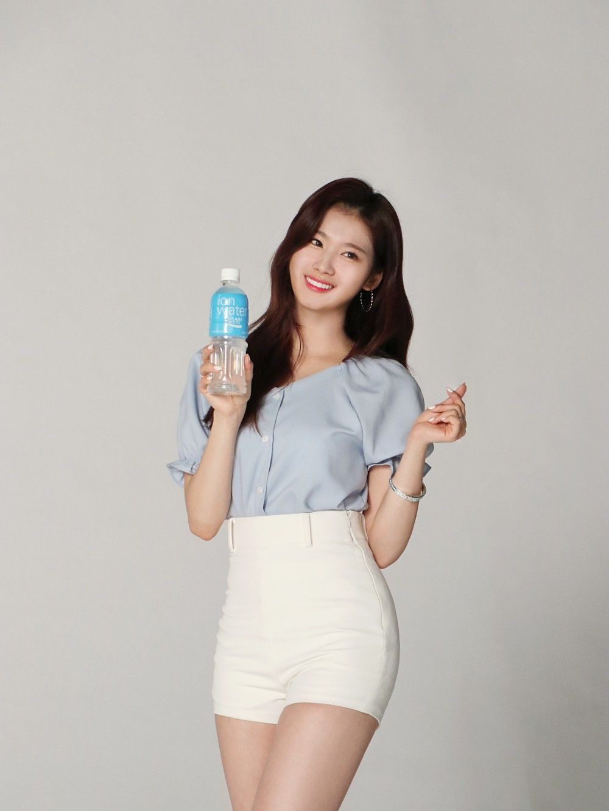
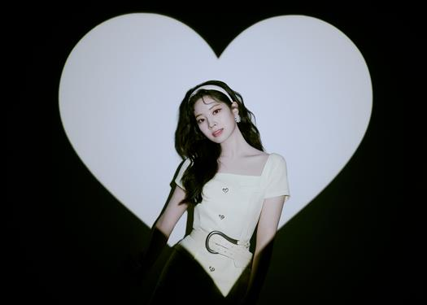
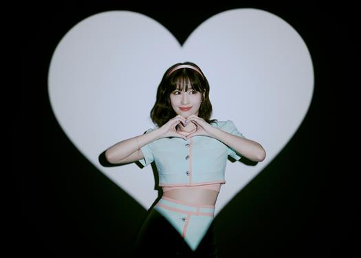
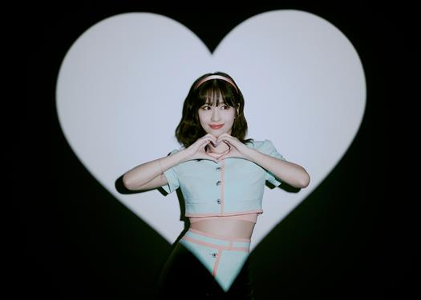
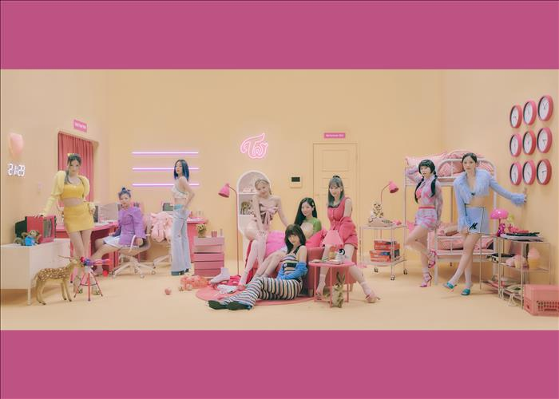

Photos Advertisement



|
Content Area
This article is about the South Korean girl group. For other uses, see Twice (disambiguation).
Twice (Korean: 트와이스; RR: Teuwaiseu; Japanese: トゥワイス, Hepburn: To~uwaisu; commonly stylized as TWICE) is a South Korean girl group formed by JYP Entertainment. The group is composed of nine members: Nayeon, Jeongyeon, Momo, Sana, Jihyo, Mina, Dahyun, Chaeyoung, and Tzuyu. Twice was formed under the television program Sixteen (2015) and debuted on October 20, 2015, with the extended play (EP) The Story Begins.
Twice rose to domestic fame in 2016 with their single "Cheer Up", which charted at number one on the Gaon Digital Chart, became the best-performing single of the year, and won "Song of the Year" at the Melon Music Awards and Mnet Asian Music Awards. Their next single, "TT", from their third EP Twicecoaster: Lane 1, topped the Gaon charts for four consecutive weeks. The EP was the highest selling Korean girl group album of 2016. Within 19 months after debut, Twice had already sold over 1.2 million units of their four EPs and special album. As of December 2020, the group has sold over 10 million albums cumulatively in South Korea and Japan, becoming the highest-selling K-Pop girl group of all time.[1]
The group debuted in Japan on June 28, 2017, under Warner Music Japan, with the release of a compilation album titled #Twice.[2] The album charted at number 2 on the Oricon Albums Chart with the highest first-week album sales by a K-pop artist in Japan in two years. It was followed by the release of Twice's first original Japanese maxi single titled "One More Time" in October. Twice became the first Korean girl group to earn a platinum certification from the Recording Industry Association of Japan (RIAJ) for both an album and CD single in the same year. Twice ranked third in the Top Artist category of Billboard Japan's 2017 Year-end Rankings, and in 2019, they became the first Korean girl group to embark on a Japanese dome tour.
Twice is the first female Korean act to simultaneously top both Billboard's World Albums and World Digital Song Sales charts with the release of their first studio album Twicetagram and its lead single "Likey" in 2017. With the release of their single "Feel Special" in 2019, Twice became the third female Korean act to chart into the Canadian Hot 100. After signing with Republic Records for American promotions as part of a partnership with JYP Entertainment, the group has charted into the US Billboard 200 with More & More and Eyes Wide Open in 2020, Taste of Love and Formula of Love: O+T=<3 in 2021, and Between 1&2 in 2022. Their first official English-language single, "The Feels", became their first song to enter the US Billboard Hot 100 and the UK Singles Chart, peaking at the 83rd and 80th positions of the charts, respectively. They have been dubbed the next "Nation's Girl Group", and their point choreography—including for "Cheer Up" (2016), "TT" (2016), "Signal" (2017), and "What Is Love?" (2018)—became dance crazes and viral memes imitated by many celebrities.


 

|
Twice
Twice in 2022
From left to right: Tzuyu, Nayeon, Jihyo, Dahyun, Momo, Sana, Jeongyeon, Mina, and Chaeyoung
Background information
Origin Seoul, South Korea Genres
K-popJ-popbubblegum popdance-popEDM
Years active 2015–present Labels
JYPWarner JapanRepublic
Member of JYP Nation
Members
Nayeon
Jeongyeon
Momo
Sana
Jihyo
Mina
Dahyun
Chaeyoung
Tzuyu
Website=>twice.jype.com


|